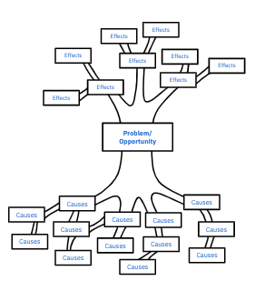

Human Centred Design | FOUNDATION
SWOT Analysis
30-60 Min
About
The SWOT analysis is a simple tool used to assess a company or programme’s current activity by looking at internal and external forces influencing it.
Use Cases
- Building consensus on the organisation or programme.
- Identifying potential risks to address.
- Identifying factors that differentiate a given business or programme from the competition.
Limitations
The SWOT analysis is only meant to provide an overview of a given business or program, for a deeper understanding of your business, consider the Startup Canvas tool.


Understand
- The ‘Strengths’ section is to be used to highlight what the programme or business does best, could be their activity, team composition, network or any other.
- ‘Weaknesses’ will cover internal shortcomings of the team or product.
- ‘Opportunities’ should address external trends and forces that could provide unique opportunities for the organisation in question.
- ‘Threats’ are the external factors risking to limit or hinder the organisation’s activity.
Step by Step
1. Discuss: Discuss with your team how your startup or program is doing by going through each of the four quadrants. Make sure at least one person is taking notes.
2. Populate: Start adding the notes into their respective quadrants, add any new thoughts that come to mind.
3. Summarise and Review: Highlight the key points for each quadrant with a few words. Once done, consider reviewing with a few more stakeholders in your company and see how to build on your Weaknesses and Threats.